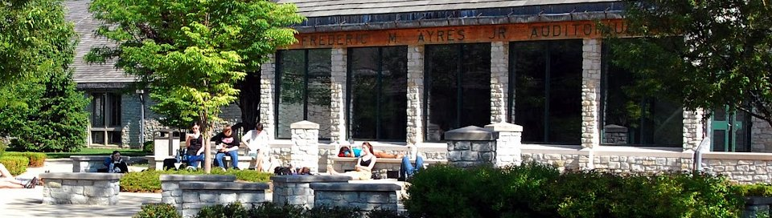
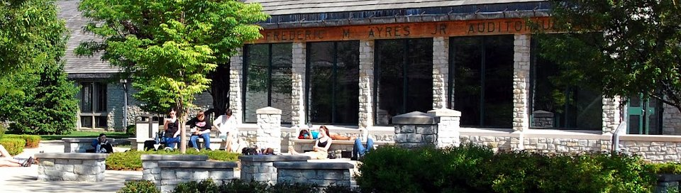
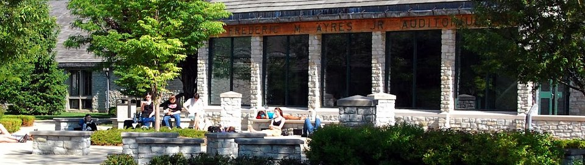
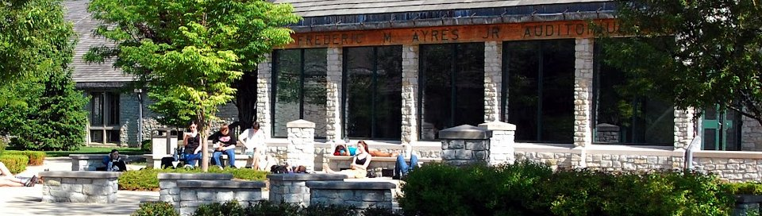

Summa Cum Laude
Park Tudor is a private, college preparatory school located in Indianapolis, Indiana. I was fortunate to be able to take three years of computer science courses, in addition to 2 courses in AP History, 2 courses in AP English, 2 courses in AP Calculus, 3 courses in AP Science, and 1 course in AP Latin.
Relevant coursework:
Beyond the core classes, I participated in the Global Scholars program, writing a "thesis" paper on comparative politics and presenting it to a panel of judges. In addition, I was a member of the soccer team, quiz bowl team, jazz band, and book club.